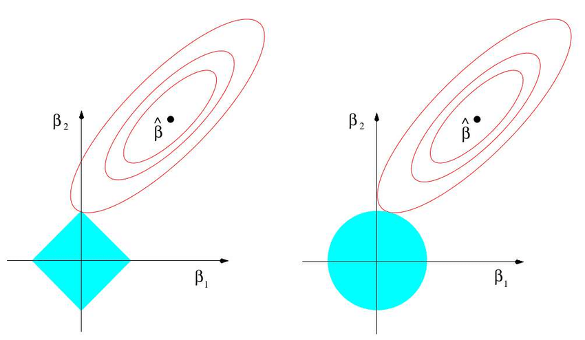

Linear regression is a regression algorithm that model a linear relation between explanatory variables and observed variables.
\(X_i^{(j)}\) represents the j-th sample and the i-th feature.
\(Y= \beta X + \varepsilon\)
The observed variable Y may be explained by explanatory variables X and a noise \(\varepsilon\). The \(\beta\) contain the relation between the explanatory variables X and Y.
Note that the \(\beta\) defined here is not an estimator, it is an oracle ie the true population parameter.
1) No collinearity: explanatory variables are linearly independent ie the matrix \(X\) is of maximal rank - \(rank = n_{parameters}\),
2) Exogeneity: errors are centered conditionally to \(X\): \(\mathbb{E}\left[\varepsilon \vert X\right]=0\) (if \(X\) are deterministic variables then the condition is \(\mathbb{E}\left[\varepsilon \right]=0\)),
3) No autocorrelation: \(\mathbb{Cov}\left(\varepsilon_j, \varepsilon_l\right) = 0 \; (j \neq l)\) (errors are independent)
4) Homoscedasticity: \(\mathbb{E}\left[\varepsilon_j ^ 2 \vert X \right] = \sigma^2\); error terms are of constant variance ie the volatility of errors won’t increase as X increase (if \(X\) are deterministic variables then the condition is \(\mathbb{E}\left[\varepsilon_j ^ 2 \right] = \sigma^2\))
5) Normality: \(\left(\varepsilon \vert X\right) \sim \mathcal{N}\left(0, \sigma^2 I_n\right)\) (where \(I_n\) is an identity matrix of size \(n\)): \(\left(\varepsilon \vert X\right)\) follows a normal centered distribution with variance \(\sigma^2\).
Hypotheses 1) is mandatory to perform model calibration as calibration requires to invert \(X^tX\). It is also useful to correctly capture relation between explanatory variables and observed variables.
Hypotheses 1) + 2) + 3) + 4) insure that the estimators is unbiased and is BLUE: the best (with lower variance) linear unbiased estimator.
Hypotheses 5) is equivalent and stronger (normality) than hypotheses 2) + 3) + 4). When the normality assumption is satisfied then the OLS estimator is equivalent to the MLE estimator.
1) Variance Inflation Factor (VIF)
2)3)4) Plot of residuals
5) QQ-plot or Kolmogorov-Smirnov test
Some adds others hypotheses like:
These hypotheses are mandatory but may seem obvious.
Calibration of linear regression can be done using three different methods. The first two methods uses OLS formulation and the third method uses a probabilistic approach.
OLS (Ordinary Least Squares) formulation for linear regression is as follow :
\[J(\beta)=\Vert Y - \beta X \Vert_2^2\]It is the squared euclidian norm of the difference between Y and \(\beta X\).
To find the minimum of \(J(\beta)\), we simply differentiate the loss function with respect to \(\beta\). We obtain:
\[\begin{eqnarray} \frac{d}{d\beta} &&= \frac{d \Vert (Y - \beta X) \Vert_2^2}{d(Y - \beta X)}\frac{d(-\beta X)}{d \beta}\\ &&= -2 (Y - \beta X)^t X \\ &&= 2 \beta (X^t X) - 2 X^t Y \end{eqnarray}\]As the derivative for the the minimum is 0, we want to set this value to 0 and we find:
\[\hat{\beta}=(X^tX)^{-1}X^tY\]This can be interprated as the covariance between X and Y over the variance of X.
It is possible to use gradient descent on \(J(\beta)\). \(\beta\) should be randomly initialized and then, at each step:
\[\begin{eqnarray} \beta &&= \beta - \alpha \frac{d(J(\beta))}{d \beta} \\ &&= \beta - \alpha \left(2 \beta (X^t X) - X^t Y\right) \\ \end{eqnarray}\]Where:
Under the normality assumption \(\left(\varepsilon \vert X \right)\sim \mathcal{N}(0, \sigma^2)\) we can use maximum likelihood to find \(\beta\).
Let write the density function of \(\varepsilon\):
\[p(\varepsilon_i)=\frac{1}{\sqrt{2\pi}\sigma}\exp\left(-\frac{\varepsilon_i^2}{2\sigma^2}\right)\]This implies that:
\[p(Y^{(j)} \vert X^{(j)}; \beta)=\frac{1}{\sqrt{2\pi}\sigma}\exp\left(-\frac{(Y^{(j)}-\beta X^{(j)})^2}{2\sigma^2}\right)\]This represent the distribution of \(Y^{(j)}\) given \(X^{(j)}\): \(Y^{(j)} \sim \mathcal{N}\left(\beta X^{(j)}, \sigma^2\right)\).
Let’s define the likelihood function:
\[\begin{eqnarray} L(\beta) &&= \prod_{j=1}^{n_{pop}} p(Y^{(j)} \vert X^{(j)}; \beta) \\ &&= \prod_{j=1}^{n_{pop}} \frac{1}{\sqrt{2\pi}\sigma}\exp\left(-\frac{\left(Y^{(j)}-\beta X^{(j)}\right)^2}{2\sigma^2}\right) \end{eqnarray}\]We want to maximize this function. It is tricky because of the product but we can apply a log function on \(L(\beta)\) to transform the product in sum. This won’t change the optimization problem as log is a strictly increasing function. We obtain the log likelihood:
\[\begin{eqnarray} l(\beta) = \log L(\beta) &&= \prod_{j=1}^{n_{pop}} p(Y^{(j)} \vert X^{(j)}; \beta) \\ &&= \log \prod_{j=1}^{n_{pop}} \frac{1}{\sqrt{2\pi}\sigma}\exp\left(-\frac{\left(Y^{(j)}-\beta X^{(j)}\right)^2}{2\sigma^2}\right) \\ &&= \sum_{j=1}^{n_{pop}} \log\left[\frac{1}{\sqrt{2\pi}\sigma} \exp\left(-\frac{\left(Y^{(j)}-\beta X^{(j)}\right)^2}{2\sigma^2}\right)\right] \\ &&= \sum_{j=1}^{n_{pop}} \left[\log\left(\frac{1}{\sqrt{2\pi}\sigma}\right)-\frac{\left(Y^{(j)}-\beta X^{(j)}\right)^2}{2\sigma^2}\right] \\ &&= n_{pop} \cdot \log\left(\frac{1}{\sqrt{2\pi}\sigma}\right) - \frac{1}{2\sigma^2} \sum_{j=1}^{n_{pop}} \left(Y^{(j)}-\beta X^{(j)}\right)^2 \end{eqnarray}\]Maximizing \(\frac{1}{2\sigma^2} \sum_{j=1}^{n_{pop}} \left(Y^{(j)}-\beta X^{(j)}\right)^2\) with respect to \(\beta\) is the same as minimising:
\[\sum_{j=1}^{n_{pop}} (Y^{(j)}-\beta X^{(j)})^2=\Vert Y-\beta X\Vert^2\]Hence under the normality assumption performing MLE is the same as performing OLS.
See \(R^2\) part in Metrics page.
\[R^2=1-\frac{SS_{Residual}}{SS_{Total}}=\frac{SS_{Explained}}{SS_{Total}}\]We can compute estimations for \(SS_{Explained}\), \(SS_{Residual}\) and \(SS_{Total}\) as:
Using the analytical formulation of \(\hat{\beta}\): \(\hat{\beta}=(X^tX)^{-1}X^tY\) we can estimate its expected value and variance. From the formula of linear regression, \(Y=\beta X + \varepsilon\). Here \(\beta\) is the oracle, the true population parameter.
\(\begin{eqnarray} \mathbb{E}\left[\hat{\beta}\right] &&= \mathbb{E}\left[(X^tX)^{-1}X^tY\right] \\ &&= \mathbb{E}\left[(X^tX)^{-1}X^t(\beta X+\varepsilon)\right] \\ &&= \beta + \mathbb{E}\left[(X^tX)^{-1}X^t\varepsilon\right] \\ &&= \beta + \mathbb{E}\left[\mathbb{E}\left[(X^tX)^{-1}X^t\varepsilon \vert X \right]\right] \\ &&= \beta + \mathbb{E}\left[(X^tX)^{-1}X^t\mathbb{E}\left[\varepsilon \vert X \right]\right] \\ &&= \beta \end{eqnarray}\)
So the estimator \(\hat{\beta}\) is an unbiased estimator of \(\beta\).
Now recall that \(\mathbb{E}\left[\hat{\beta}\right]=\beta\) and let’s check the variance of \(\hat{\beta}\).
First as \(\mathbb{E}\left[\hat{\beta}\right]=\beta\), then \(\left(\mathbb{E}\left[\hat{\beta}-\beta\right]\right)^2=0\) and thus \(Var(\hat{\beta})=\mathbb{E}\left[(\hat{\beta}-\beta)^t(\hat{\beta}-\beta)\right]\).
\[\begin{eqnarray} \mathbb{E}\left[(\hat{\beta}-\beta)(\hat{\beta}-\beta)^t\right] &&= \mathbb{E}\left[\left((X^tX)^{-1}X^tY-\beta\right)\left((X^tX)^{-1}X^tY-\beta\right)^t\right] \\ &&= \mathbb{E}\left[\left((X^tX)^{-1}X^t(\beta X+\varepsilon)-\beta\right)\left((X^tX)^{-1}X^t(\beta X+\varepsilon)-\beta\right)^t\right] \\ &&= \mathbb{E}\left[\left((X^tX)^{-1}X^t\varepsilon\right)\left((X^tX)^{-1}X^t\varepsilon\right)^t\right] \\ &&= \mathbb{E}\left[(X^tX)^{-1}X^t\varepsilon^t\varepsilon X(X^tX)^{-1}\right] \\ &&= (X^tX)^{-1}X^t\mathbb{E}\left[\varepsilon^t\varepsilon\right] X(X^tX)^{-1} \\ &&= (X^tX)^{-1}X^t \sigma^2 X(X^tX)^{-1} \\ &&= \sigma^2 \left((X^tX)^{-1}X^tX\right)(X^tX)^{-1} \\ &&= \sigma^2(X^tX)^{-1} \\ \end{eqnarray}\]So \(Var(\hat{\beta})=\sigma^2(X^tX)^{-1}\). Note that \(\sigma^2\) is unknown.
It is estimated by \(s^2\):
\[s^2=\frac{1}{n-2}\sum_{j=1}^{n_{pop}}\left(\hat{\varepsilon}_i-\bar{\varepsilon}\right)^2=\frac{1}{n-2}\sum_{j=1}^{n_{pop}}\hat{\varepsilon}_i^2\]Where:
The \(n-2\) at the denominator comes from the fact that the total sum of squares from the \(\hat{\varepsilon}_i\) will underestimate the true total sum of squares (from the \(\varepsilon_i\)).
For a regression with only 1 factor: \(Var(\hat{\beta})=\frac{\sigma^2}{\sum_{j=1}^{n_{pop}} (X^{(j)}-\bar{X})^2}\).
Assuming normality of \(\varepsilon\) (\(\varepsilon \sim \mathcal{N}(0, \sigma^2 I_n)\)), \(\hat{\beta}\) is also normal and:
\[\hat{\beta} \sim \mathcal{N}(\beta, \sigma^2(X^t X)^{-1})\]With \(s^2\) the approximation of \(\sigma^2\) being:
\[s^2=\frac{1}{n-2}\sum_{j=1}^{n_{pop}}\hat{\varepsilon}_i^2\]For more info see:
Using the variance estimator \(s^2\) we can write:
\[\hat{\beta} \sim \mathcal{N}(\beta, s^2(X^t X)^{-1})\]Note that \(s^2\) is a chi-2 random variable as it is a sum of squares random variables. The variance of \(\hat{\beta_i}\) is \(s_{\hat{\beta_i}}^2\) (the errors have the same variance but the \(\hat{\beta_i}\) variance also depend on X).
Note also that if n tends to infinity (in practice \(n \geq 100\)), the distribution of the estimator \(s^2\) tends to a gaussian distribution (thanks to CLT and the fact that a chi-2 distribution is a sum of chi-2).
Under the normality assumption, some tests my be performed on the \(\hat{\beta_i}\) to check their are significantly different from a given \(\beta_i\) value. In general we want to test if \(\hat{\beta}_i\) is significantly different from 0 (in this case we choose \(\beta_i=0\)).
Student test perform a test on each \(\hat{\beta_i}\) separately. The test follows a student distribution as \(\hat{\beta_i}\) follows a normal distribution and its variance estimation a chi-2 distribution.
The hypotheses H0 is \(\hat{\beta_i}=\beta_i\) and the hypotheses H1 is \(\hat{\beta_i} \neq \beta_i\).
The t-statistic is as follow:
\[T=\frac{\hat{\beta}_i-\beta_i}{s_{\hat{\beta}_i}} \sim t_{n-2}\]Where:
Once the T-statistic is computed, one can use the inverse cdf of the Student distribution (with \(n-2\) degrees of freedom) to get the p-value of the test.
When n is large enough, a Z-test can be used.
Fisher test tests nullity of all parameters.
Hence the hypotheses are:
The F-statistics is then:
\[F=\frac{SS_{Explained}}{SS_{Residual}}\]Where:
The p-value can be obtained applying the inverse cdf function of the Fisher distribution to this F-statistic.
Using the notation from the Student test we can write the \(\alpha\) confidence interval as:
\[\beta_i \in \left[\hat{\beta}_i-s_{\hat{\beta}_i}t_{n-2}; \hat{\beta}_i+s_{\hat{\beta}_i}t_{n-2}\right]\]So \(\beta_i\) is in this interval with confidence level \(1-\alpha\).
Lasso, Ridge and ElasticNet are three alternative to the classical linear regression. These methods add penalizations on the \(\beta\) parameters in order to regularize the model (add biais but reduce the variance).
Ridge adds an \(L_2\) penalty (euclidian distance). The minimization problem is then:
\[\begin{eqnarray} J(\beta) &&= \Vert Y - \beta X \Vert_2^2\\ && \text{ st } \Vert \beta \Vert_2^2 \leq C \end{eqnarray}\]The Lagrangian is used to perform the optimization. The Lagrangian minimization problem is:
\[\min \Vert Y - \beta X \Vert_2^2 + \lambda \Vert \beta \Vert_2^2\]Generally, the hyperparameter we set is the \(\lambda\) and not the \(t\).
The \(\beta^{Ridge}\) can be find easily computing the derivative with respect to \(\beta\) and setting it to 0.
\[\begin{eqnarray} \frac{d}{d\beta} &&= \frac{d \Vert (Y - \beta X) \Vert_2^2}{d(Y - \beta X)}\frac{d\beta X}{d \beta} + \lambda \frac{d\Vert \beta \Vert_2^2}{d\beta} \\ &&= 2 (Y - \beta X)^t X + 2 \lambda \beta \\ &&= 2 \beta (X^t X + \lambda I_n) - X^t Y \end{eqnarray}\]Setting the derivative to 0 we obtain:
\[\hat{\beta^{Ridge}}=(X^tX+\lambda I_n)^{-1}X^tY\]Lasso adds an \(L_1\) penalty (manhattan distance). The minimization problem is then:
\[\begin{eqnarray} J(\beta) &&= \Vert Y - \beta X \Vert_2^2\\ && \text{ st } \Vert \beta \Vert_1 \leq C \end{eqnarray}\]The Lagrangian is used to perform the optimization. The Lagrangian minimization problem is:
\[\min \Vert Y - \beta X \Vert_2^2 + \lambda \Vert \beta \Vert_1\]Generally, the hyperparameter we set is the \(\lambda\) and not the \(t\).
Lasso performs a selection of variables so it works better if only a few features are useful. Also it is easier to interpret the model. However if important variables are correlated, Lasso algorithm will only keep one of these variables.
The most famous proof of the variable selection performed by the Lasso algorithm is a visual proof:

The unit ball in norm 1 has it angles on the axis. The probability to touch an angle is high and corresponds to the probability to have a null coefficient.
A mathematical proof also exists but is complex.
Here is a sketch of proof:
We differentiate with respect to \(\beta\) to find the min and we find:
\[(X^t X)\beta - X^t Y \pm \lambda = 0\]The sign applied to \(\lambda\) depends on the value of \(\beta_i\) (as \(\frac{d\Vert \beta \Vert_1}{d\beta}\) is \(1\) if \(\beta \geq 0\) and \(-1\) if \(\beta \lt 0\)).
The Lasso estimator \(\hat{\beta_i}\) must have the same sign as \((X^t Y)_{(i)}\) as \(\hat{\beta_i}\) captures the relation between \(X\) and \(Y\). The sign of \((X^t Y)_{(i)}\), the covariance of \(X\) and \(Y\), is the sign of their relation.
If \((X^t Y)_{(i)} \gt 0\) then \(\beta_i\) is positive and \(\hat{\beta_i}\) must also be positive:
\[\hat{\beta_i^{Lasso}} = \max\left(0, (X^t X)_{(i,i)}^{-1}(X^t Y)_{(i)} - \lambda\right)\]If \((X^t Y)_{(i)} \lt 0\) then \(\beta_i\) is negative and \(\hat{\beta_i}\) must also be negative:
\[\hat{\beta_i^{Lasso}} = \min\left(0, (X^t X)_{(i,i)}^{-1}(X^t Y)_{(i)} + \lambda\right)\]Hence in both case if the absolute value of \(\lambda\) is greater than the absolute value of \((X^t X)^{-1}_{(i,i)}(X^t Y)_{(i)}\) then the \(\hat{\beta_i^{Lasso}}\) estimator will be 0. Lasso will select columns of X that are more correlate (positively or negatively) to Y. Indeed if \((X^t X)^{-1}_{(i,i)}(X^t Y)_{(i)}\) is large (which mean they are collinear ie with high correlation) then a large \(\lambda\) would be required to set \(\hat{\beta_i^{Lasso}}\) to 0.
This proof is freely inspired by this proof by Arthur Charpentier and this proof on StackExchange.
ElasticNet uses a mix of \(L_1\) and \(L_2\) penalties:
\[\begin{eqnarray} J(\beta) &&= \Vert Y - \beta X \Vert_2^2\\ && \text{ st } \alpha \Vert \beta \Vert_1 + (1-\alpha) \Vert \beta \Vert_2^2 \leq C \end{eqnarray}\]The Lagrangian is used to perform the optimization. The Lagrangian minimization problem is:
\[\min \Vert Y - \beta X \Vert_2^2 + \lambda \left[\alpha \Vert \beta \Vert_1 + (1-\alpha) \Vert \beta \Vert_2^2 \right]\]We can also write:
\[\min \Vert Y - \beta X \Vert_2^2 + \lambda_1 \Vert \beta \Vert_1 + \lambda_2 \Vert \beta \Vert_2^2\]See these Wikipedia pages:
And :